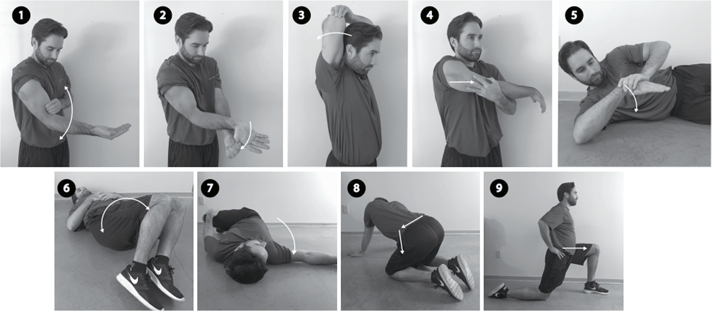
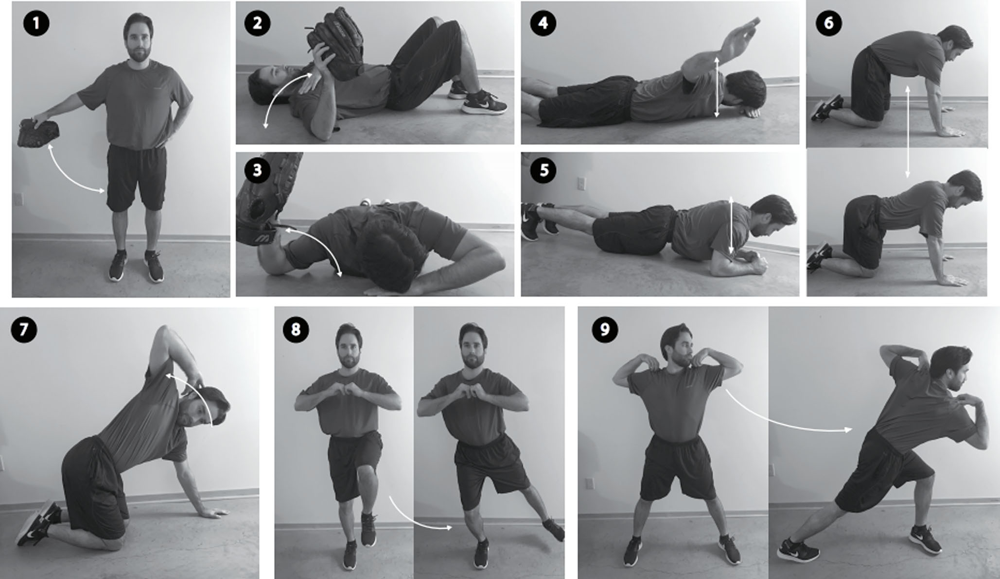
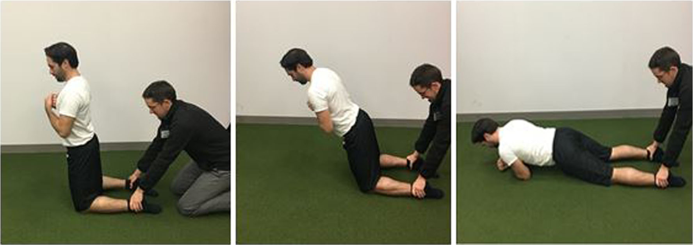

这篇综述系统回顾了棒球运动从青少年到职业水平的损伤流行病学与预防文献。核心发现：
🔑 核心论点：过度使用是青少年棒球运动员最主要的损伤机制；但在职业水平，过度使用与损伤增加的因果关系未被证实，说明不同级别的损伤机制和预防需求存在本质差异。
核心风险 过度使用（Overuse）已被明确证实为青少年棒球运动员最主要的损伤机制。骨骼发育未成熟时，对重复性投球负荷的适应能力有限。
Oliver 等（2017）生物力学研究发现：青少年投手在投变化球和非变化球之间，手臂位置及骨盆、躯干、上肢的肌肉激活无显著差异。这一发现支持了"变化球并不比其他投球更危险"的论点，但这并不意味着可以无限制投变化球——关键在于总体负荷管理。
前瞻性随机试验验证 Sakata 等（2017）的「横滨棒球-9（Yokohama Baseball-9）」方案被随机对照试验验证，显著降低了青少年棒球运动员的内侧肘关节损伤。该方案同时改善了：


Conte 等（2016）分析了 1998–2015 年 MLB 损伤趋势：
Chalmers 等（2016）：峰值快球速度是UCL重建的独立预测因素
Keller 等（2016）：投球速度和投球类型与UCL损伤风险相关
Camp 等（2017）：基于82,000次投球的生物力学分析，发现投球手臂力学与肘内翻扭矩的关系

本文的核心贡献是揭示了不同竞技水平需要不同的损伤预防策略——一刀切的方案行不通。
| 维度 | 🧒 青少年棒球 | 🏟️ 职业棒球 |
|---|---|---|
| 主要损伤机制 | 过度使用（已证实） 骨骼未成熟，对重复负荷适应性差 |
过度使用与损伤的因果关系未被证实 但仍需监控负荷 |
| 投球数管理 | ⚠️ 严格监控，至关重要 | 仍需监控，但非核心关注点 |
| 变化球 | 生物力学研究未发现变化球更危险 关键在于总体负荷 |
关注球速和球种与UCL损伤的关联 |
| UCL损伤趋势 | 手术数量持续上升，年轻化趋势明显 | 发生率显著增加 |
| 上肢重点 | UCL损伤、关节活动度 | UCL损伤、肩袖损伤、球速 |
| 下肢重点 | 髋关节活动度 | 腘绳肌损伤（Nordic训练） |
| 关键预防措施 | ✅ 横滨棒球-9 综合训练方案 ✅ 成人不鼓励带痛投球 ✅ 安全器材（安全用球、面罩） ✅ 投球指南普及教育 |
✅ 肩关节外旋/前屈活动度维持 ✅ 离心腘绳肌训练 ✅ 球速监控 ✅ 改良睡眠者拉伸 |
| 独特风险 | 46%曾被鼓励带痛继续投球 预防知识普及不足 |
峰值球速是UCL重建的独立预测因素 累积工作量 |